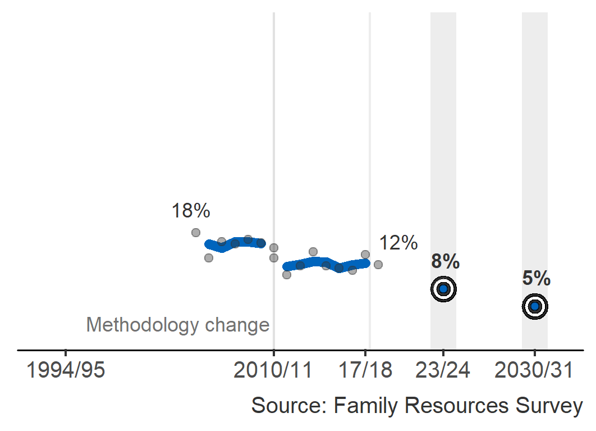
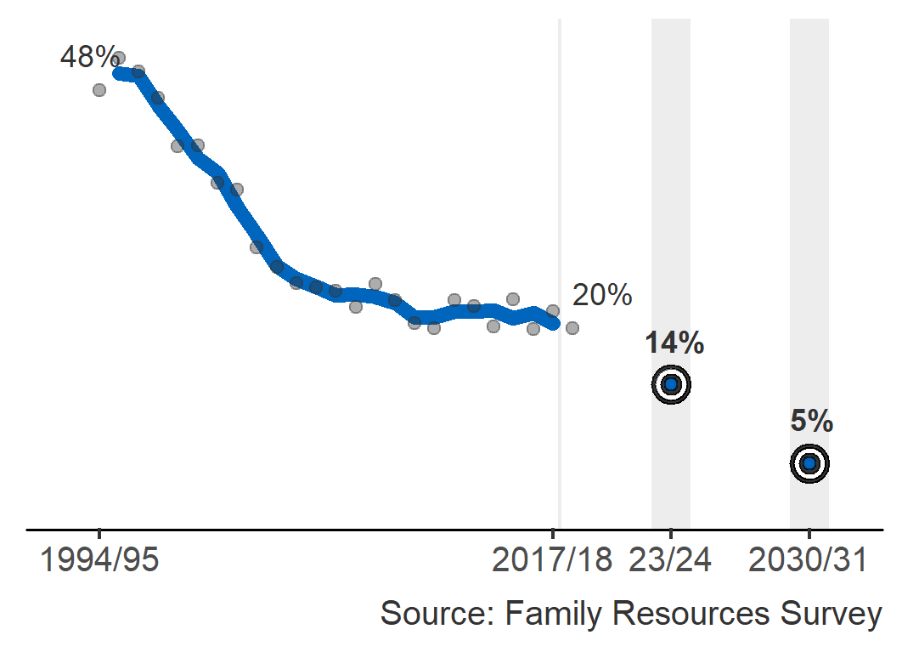
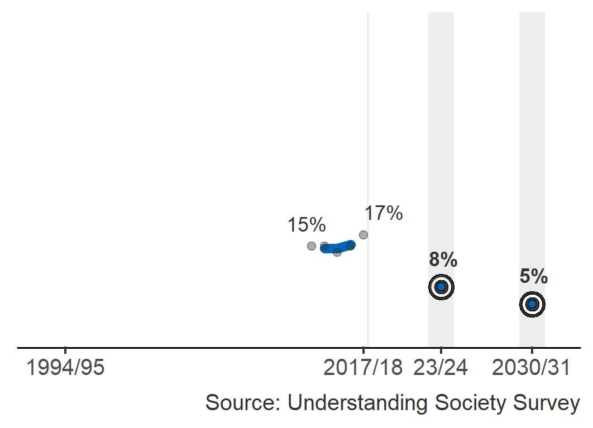

Child poverty update
Published on 26 March 2020, next update March 2021
The Child Poverty Act 2017 contains four income-based targets to reduce child poverty in Scotland by 2030. The charts show the interim and final targets and the latest poverty estimates. Note that the dots and labels show single-year estimates and the lines show the three-year averages. Single-year estimates can be used to understand the situation at a certain point in time, and three-year averages show trends more accurately.
Relative poverty
Income is low relative to the rest of society
Proportion of children living in households with equivalised incomes below 60% of the median (middle) UK income in the current year.

Combined low income and material deprivation
Unable to afford basic necessities
Proportion of children in households with equivalised incomes below 70% of the median UK income AND going without certain basic goods and services.
Absolute poverty
Living standards are low relative to 2010/11
Proportion of children living in households with equivalised incomes below 60% of the median UK income in a base year (currently 2010/11) adjusted for inflation.
Persistent poverty
Living in poverty for a number of years
Proportion of children who have lived in relative poverty in three or more of the last four years.
More information and further child poverty analysis is available.